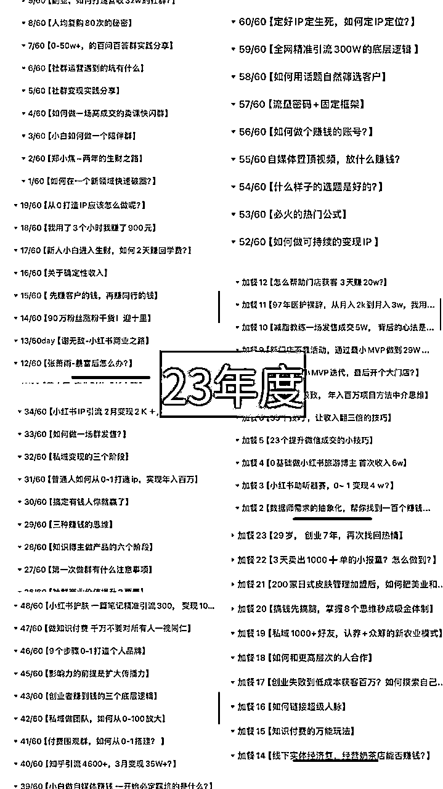
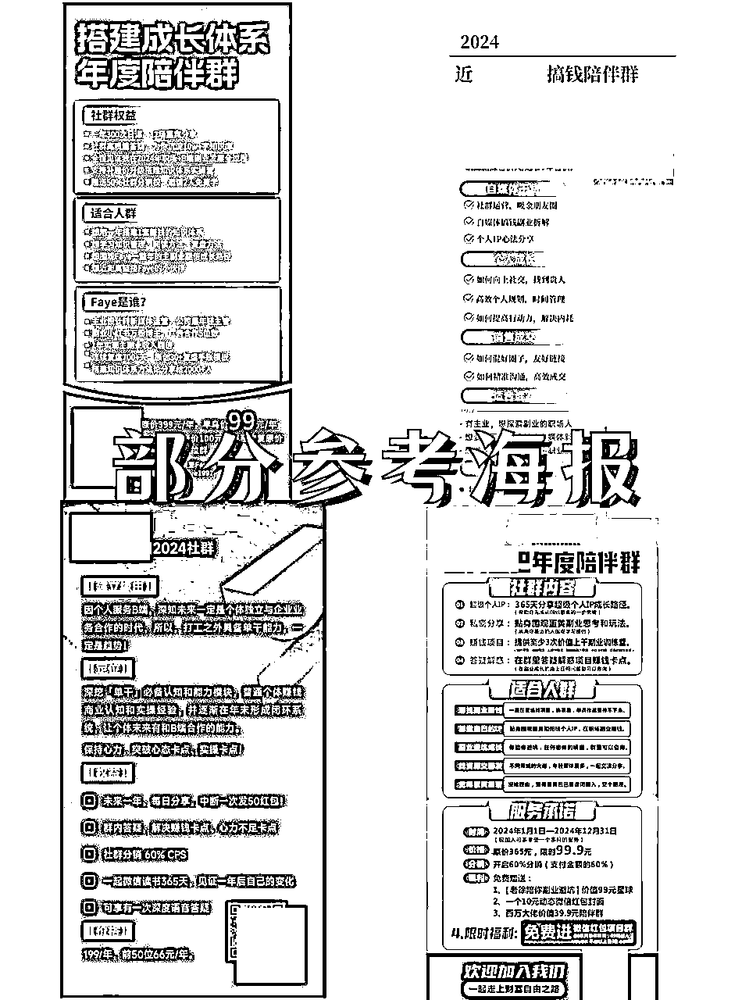
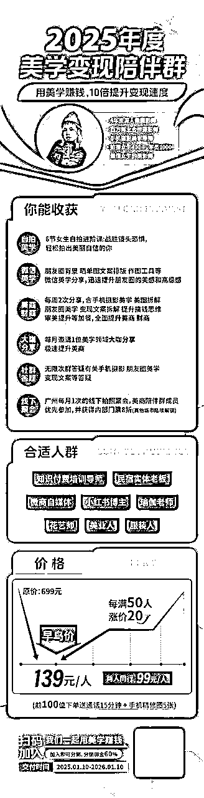
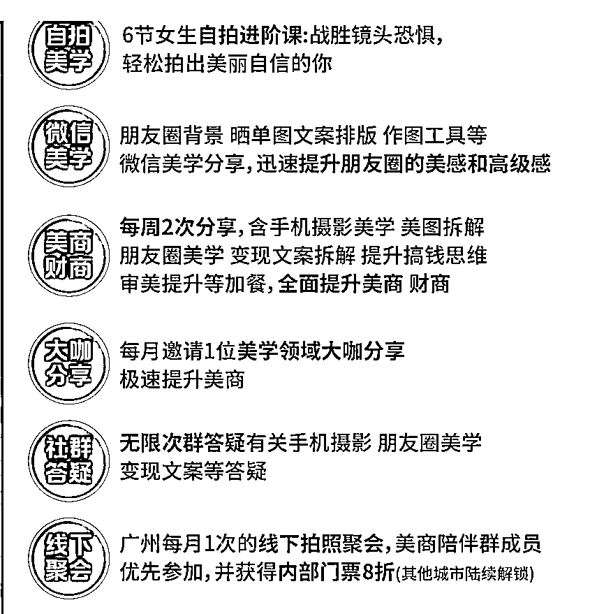

来源：https://dqez6wornz.feishu.cn/docx/Y5d9ddOCjopvFQxtYemcmC5xnFc
做了三年的陪伴群，更新了400多篇笔记，变现没有仔细的去数过，大概范围也有5-7w，我不是什么大佬，我主要是分享我自己做小白期间做陪伴群的所有经验，如果你没有什么做社群经验能力，但是你也想开始自己的社群，或许这篇文章对你有帮助~

（23年度陪伴群精华截图）
（24年度陪伴群精华截图）
下面分3个部分介绍：
人生确定性三件套：
内容能力 ，流量能力，销售能力
这几个才是真正陪你穿越周期的能力，陪你一辈子的同时，只要你每次使用一点点，你掌握的能力和熟悉力就越来越深。
并且这几个能力是不可能被Ai这些给取代，所以我们要做的就是重点培养其中两个能力，一个是内容能力，一个是销售能力
你是否成也总是不好意思谈钱，你是否也不好意思做自己卖自己的东西……
如果说你是这样子的话，未来靠自己赚钱你一定要克服这个心理难关。
其实销售是一件特别有成就感的事情，一个是可以带来收入，第2个是可以给别人解决问题，销售的本质就是给别人问题，别人才会给钱给你。
我自己经历过月年入2万
到月入2万
到日入2万我都经历过，当我不断的去积累小赚小钱的手感之后，慢慢的我就会对大钱有感知，也更加清楚怎么去做高客单的成交了但是这些都不是一蹴而就的，你想要赚大钱一定要先从小钱开始赚，如果说你没有经历过小钱，那你未来一定也会去经历的，这些是逃不掉的。
像我今年很明确的定位就是今年做一些美学的高客单产品，我不会自己去做高客单产品，但是我会去做嫁接，找一些有影响力的美学平台加入他们，然后卖他们的产品就好了！
这几年不停的做产品之后我就开悟了
卖东西也不需要总是从0开始
你完全可以从一开始，去嫁接和你定位相关的平台或者产品，他们有完整的交付端，你就可以安心的去做流量端就好了，这样子你的效率也会更高。
所以你打算后面去做一些高客单的售卖，可以去尝试做陪伴群去培养自己的种子用户。
三年前开始，连续每天输出5条朋友圈，坚持了三年，4000多条
两年前开始做陪伴群，目前为止更新了快400篇商业笔记，咋们先不谈论这个质量问题，因为没有数量 不谈质量
首先因为积累了这个数量，我从以前输出困难症，到现在我最大的改变就可以很轻松的输出我想要输出的东西，很好的锻炼了我的表达欲
其次我刚开始从不知道怎么写朋友圈到现在越来越有针对性，越来越会提炼产品的卖点去实现被动成交
最后我因为这个表达能力，我吸引了很多同频的人，来到我的身边，成为了我的合作伙伴，成为我的学员，成为我的客户，这些都是表达带来的力量
……
以上
要知道表达力是对自媒体来说非常非常的重要！
因为很多自媒体人的退场，不是因为能力不行，资源不够，而是因为内容力丧失
所以自媒体人一定要保护好以及趁早培养好你的内容力！
一句话总结流程：付费对标-拆解对标-拼装组合
你的竞争对手就是你最好的学习对象，这个流程对于做任何事情都是有效的，不管是做未来的知识付费，后来说你做实体店都是一样的，我们先去把整个流程调研一遍再去做自己的
找到你喜欢的人，喜欢的模式，喜欢的事情去模仿，但是要注意 ，模仿的对象不能和自己相差太远，因相差太远会增加你的执行难度
咋就是说把好的套路摸清楚，把它快速模仿复制在自己的社群上，不要觉得不好意思，自我迭代才是最要紧的事情！
那问题来了？我怎么找得到合适社群呢？
其实有一个非常简单的方式，就是人人都能做，去付费你想对标的陪伴群
我之前做社群之前已经付费加入了七八个类似的社群，主要详细拆解5-10个厉害的，剩下几个中小社群就看着感觉来拆解。
下面分享找到合适社群之后，可以从以下维度拆解
1/社群目的
模仿这件事，最怕的就是不明真相！
一个优秀的社群，每个动作必有目的性，如果你只是 复制 了人家的动作，没有理解内在的逻辑，最后一定是既耗费了精力，又没有效果。
所以优秀的社群的目的要深入去了解
2/内容形式
内容形式一般有图文和视频，社群一般是图文比较多，因为成本低，不管是制作成本还经济成本，还是输入输出成本都普遍偏低，而视频则与之图文相反
内容方向就是说这个社群主要是分享哪个领域的是综合性还是针对性？
综合性，比如说认知，眼界，破圈，地坑，创业企业，行业策略，个体价值等等含有。针对性，主要针对某一领域展开
比如说搞钱陪伴群，分享的就是搞钱的方方面面
比如说小红书陪伴群，分享的领域大部分是小红书方面
3/参考海报
需要把海报拆解下来
比如海报主题是什么，副标题是什么，收费标准是什么，内容主题是什么，为什么要现在下单？为什么要找他下单？

4/运营方式
运营方式需要看轻运营OR重运营？
轻运营，主要就是群主分享，期间没有太多的运营成本和人员配置
重运营，主要需要团队 有人上课 有人答疑 预告 跟进学员 布置作业 改作业 复盘前后等等
5/社群权益
一句话总结：加入社群你能得到什么？
6/收费标准
陪伴群属于引流产品，所以说定价一般都不会太高，我了解到的大部分是29~200区间居多
7/承接产品
陪伴群属引流品，最好有承接高客单产品，这样才能够最大化利用且不易浪费
8/内容来源
内容来源：一句话就是以终为始
需要根据社群目的以及后端产品去设计，
比如你的目的是要成交小红书的0基础学员，这个时候内容可以主要针对小红书板块
比如你主要是成交高客单的营销产品，这个时候就主要针对分享一些搞钱领域
根据上面的拆解之后就开始去做自己的社群框架，把把你有的把你会的放进去，把你不会的扔掉就可以了
下面给你们展示一下，我是怎么设定自己社群的框架
社群的定位主要跟两个有关系，一个是主要交付内容，第2个是你的核心优势
1/交付内容
你社群的主要权益，比如说你主要是做副业呢，还是说赚钱的点子呢？还是说时间管理呢？还是说读书呢？还是说美学呢？你要有一个侧重点，像我的话就是美学这块，所以我的今年陪伴群就是以美学变现为主，开始不要全部都想要，我们先做好一个点再切入

02核心优势
你的优势一定要放在你的陪伴群里面去做结合，这样子去生发售时候才有更多底气，比如说我是在美学这块视觉所，这块我觉得目前是做的还可以，我也是想今年重点发展，所以我就把今年的定位换成了美学变现
如果说你实在不知道你的优势，那其实就可以从3个维度判断
以上三个的结合点就是你最擅长的
让你坚持下去是一切的前提！
内容形式，我用的是图文
因为我擅长，我喜欢，能坚持，成本低，优势太多了...
内容方向，因为我想要的是漏斗筛选，所以就偏向综合一点，比如说有自拍美学，有私域美学，审美提升，变现文案拆解，搞钱思维等等。
海报包含：海报 副标题 主理人介绍 交付内容 价格 合适人群 交付时间 海报配色等
我陪伴群一般是轻运营模式，主要就是群主分享每周两次➕嘉宾每月1次定期分享，期间没有太多的运营成本和人员
加入社群你能得到什么？
我给自己设置了6个：
①自拍美学 6节女生自拍进阶视频课：战胜镜头恐惧，轻松拍出美丽自信的你
②微信美学 朋友圈背景 晒单图 文案排版 作图工具等，提升朋友圈的美感和高级感
③美商财商 每周2次分享，含手机摄影美学 美图拆解 朋友圈美学 变现文案拆解 提升搞钱思维等加餐，全面提升美商 财商
④大咖分享 每月邀请1位美学领域大咖分享 分享，极速提升美商
⑤社群答疑 无限次群答疑有关手机摄影 朋友圈美学 变现文案等答疑
⑥线下聚会 广州每月1次的线下拍照聚会，美学陪伴群成员优先参加，并获得内部门票8折（其他城市陆续解

陪伴群属引流产品，定价一般不要太高，陪伴群最重要的就是流量，如定价太高点，进来的门槛就会增加，人数就容易受限
所以，我建议是39~199元左右，中间可以有一个梯度的涨价，梯度涨价也有讲究，最好是50人涨价一次，且金额不要太大
不建议10个就涨价，也不建议买100个就涨价，前者太快，后者太久，所以说取中间值50人会比较合适。
我的用户来源主要有两个，一个是自己的，一个是分销的
1/一个是收费的【这些可以是喜欢你的人，认可你的人等等】
2/一个分销的【这些是小kol邀请的，你把文案 素材搞好 ，引导去发圈就好了
陪伴群属于引流品，最好是要承接高客单产品
这样才能够最大化利用。你的资源且不容易浪费。
我 23年过一个，但是我当时没有高客单产品，主要因为我没有后端承接意识，接着24今年付费进入了很多高客单社群去筛选合适我的产品，用我的优势去卖别人的产品，我在中间赚差价以及赚影响力就ok了。
所以当你自己没有高客单的时候，也可用我这种方式，起步不需要自己去做高客单
因为高客单是需要交付很重，需要团队，需要精力和经验还有模式支撑
没有交付是就是割韭菜，这种一次性生意是不长久的
所以说最好的模式，就是借势！卖有影响力且优质的产品。
不知道你们有没有我的时候这种想法，我刚开始做社群的时候老是想要找一个合伙人和我一起做，但是找了很久都一直没有找到，后面因此拖了大半年 后面我就打算不找了。
所以你是零经验做社群不需要找任何的合伙人，因建立起步阶段，自己没有搞清楚找这些是没有意义的，只会徒增成本
且在你不够优秀的时候，你也不会遇到太牛逼的合伙人。
我不找合伙人之后，我就开始换个形式，就是找牛逼和有影响力的嘉宾，这个就可以解决内容问题+影响力问题+新流量问题。
关于更新频率量，二三年是随便更，二四年是每周一到每周五更，二五年我打算一周两更。所以也是不停的尝试之后的调整的结果，如果说你不清晰可以，刚开始不用搞这么多因为会加重的负担，如果说你也不靠这个主要赚钱，一周2-4更就可以了。
所以新手来说不建议做日更，用剩下的时间做流量！
以上就是我做陪伴群的经验分享了，感谢大家观看，希望对大家有帮助。